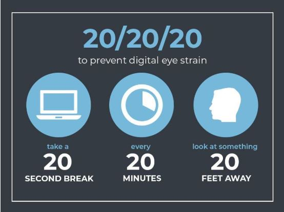
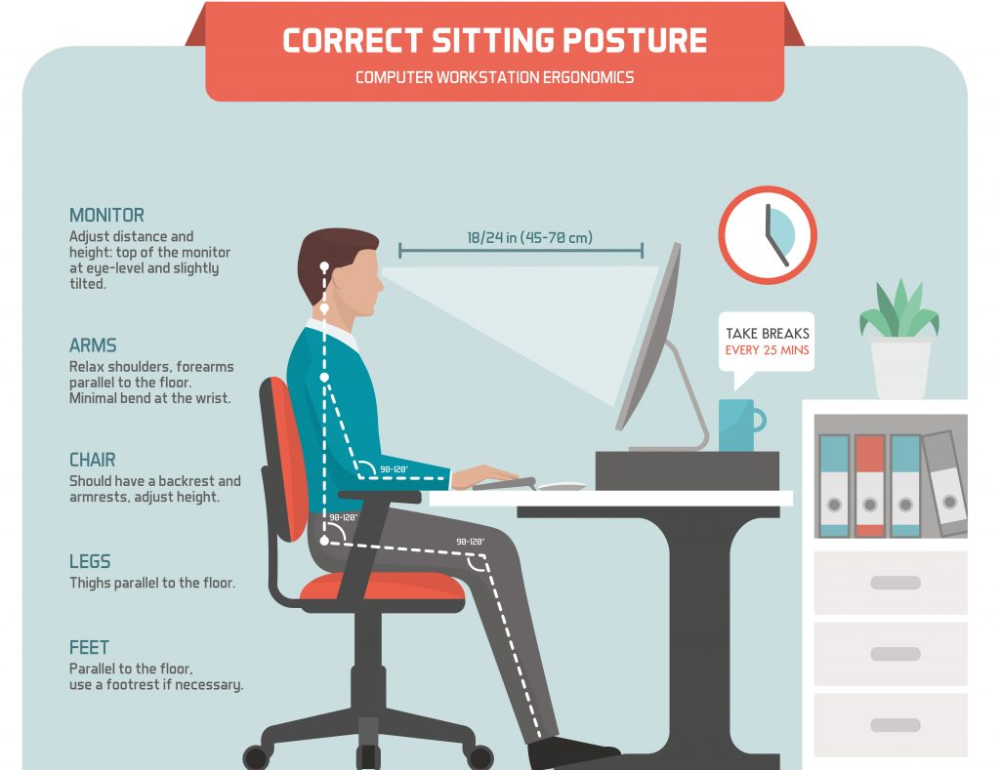

How can You Minimize the Impact of Digital Technology on your Physical Health?
As previously mentioned, the rise of digital technology has brought quite the array of problems concerning your physical health. Anyone can be affected by digital eye strain, poor posture, sleep disorders, and physical inactivity, and the key in preventing these issues comes from being digitally responsible. This means that we must all individually take responsibility for our technology use, in a way that is not harmful to ourselves and being aware of the impact it has on our health. The following solutions will either tackle a specific problem previously mentioned, or be general tips to maintain your physical health in the digital age.
Reducing Digital Eye Strain: The 20-20-20 Rule

A general rule of thumb that doctors recommend in minimizing the symptoms of digital eye strain is the 20-20-20 break. That is, for every 20 minutes of screen tie, you should take a 20 second break, and focus your attention on something 20 feet away, instead of your screen. By following this rule, you allow your eye muscles to relax, and your brain to rest.
As well, other prevention methods you can take to reduce eye strain is reducing screen glare and brightness, and positioning yourself not too close or far from the screen. In general, if you catch yourself becoming too immersed in the screen, train yourself to blink more and relax your eyes.
Preventing Poor Posture: Ergonomics

Preventing poor posture lies in applying the correct posture when using digital technology. Therefore you must ensure proper sitting and viewing postures. Instead of contributing strain on your body, you can hold your phone out in front of you rather than your lap hunched over.
Besides following proper posture, another step you can take is creating an ergonomic workplace. You can consider using a standing desk, which takes pressure off of the neck, shoulder and back. Many office appliances offer ergonomic versions, such as chairs, keyboards and mice which all promote better posture.
Finally, just taking regular breaks to stretch can reduce the stress from poor postures. This can be incorporated with the 20-20-20 rule, where after the 20 minutes you can walk around for a bit, stretch and reset.
Avoiding Sleep Loss: Creating a Smart Environment
The best way to avoid sleep disruption from digital devices is to replace night-time device use with activities more helpful for sleep. By establishing a consistent bedtime routine free of screens, you won’t ever feel tempted to binge your devices at night. You can choose to wind down by reading, meditating, listening to music, or any other slow paced activities to prepare for the night. A good guideline to follow is to avoid device use for at least an hour before bed and putting all screens in night mode if possible.
When preventing device addiction, it is very unlikely to stay off your devices out of pure willpower. Instead, try to put actual barriers between yourself and your device, and change your nighttime environment. This can be choosing to turn off all Wifi at a certain time, or blocking all notifications and shutting down your devices.
Minimizing Physical Inactivity: Creating an Active Environment
While digital technology can cause physical inactivity, it can also help solve this inactivity. There are a range of fitness devices and apps that encourage and help you commit to an exercise routine, while also tracking your progress. Just like creating an environment that discourages device usage at night, you want to create an environment around you that encourages staying active and healthy.
Be more involved in communities for physical activities you enjoy, and if you currently aren’t active, try and fit just a little more movement into your routine. The best fitness habits to have if your time is limited is to tie them directly to your digital technology usage. When taking your 20-20-20 break you can go for a walk every few breaks, or pump out a few jumping jacks in between.
I hope these articles about how and why you should maintain your physical health in the digital age. Before you continue on, this is the perfect time to take a quick break. Get out of your seat and focus away from your screen for a bit, and feel free to stretch and move around too!
Go to the next page to check out the 20-20-20 timer, and then some extra resources!